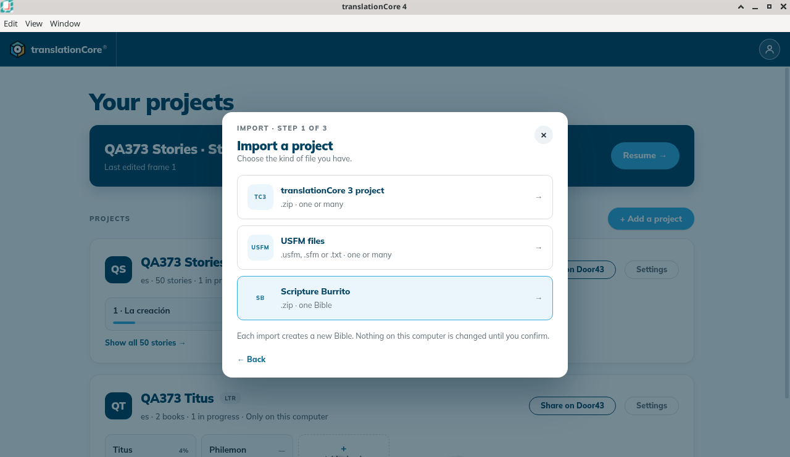
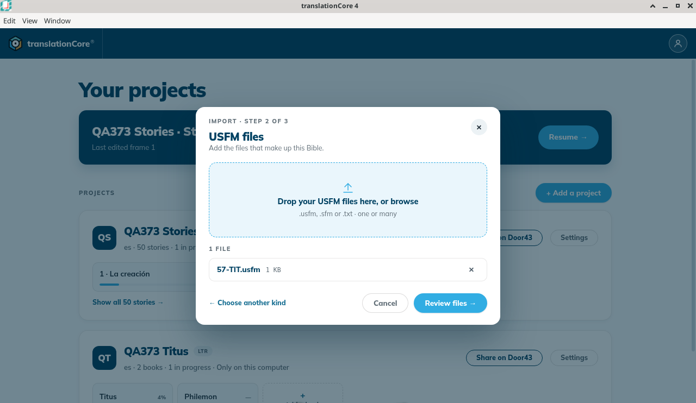
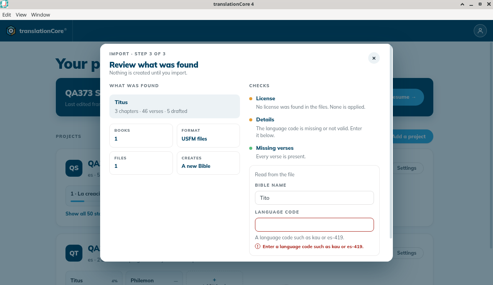
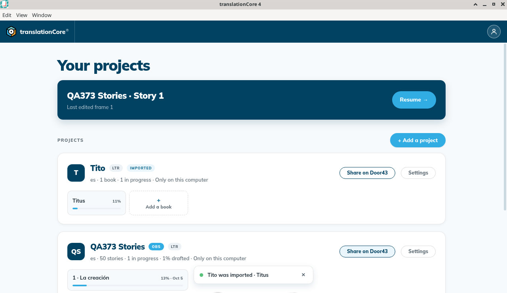
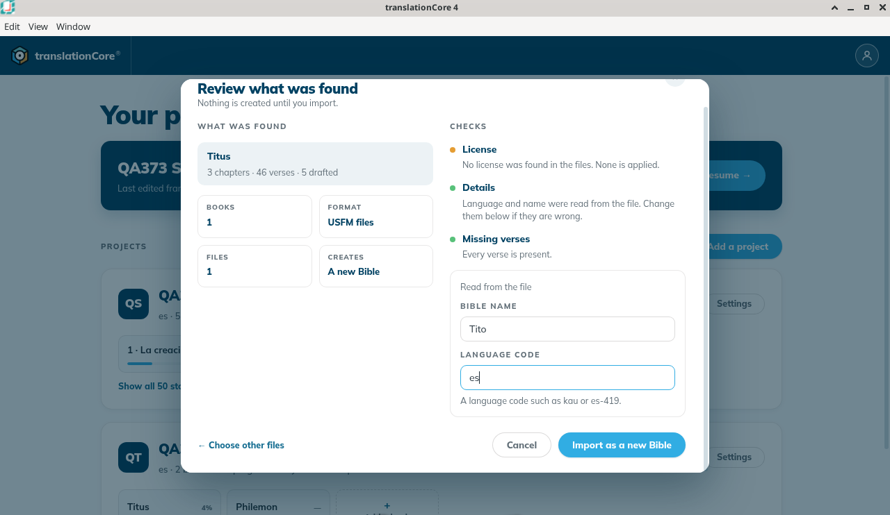
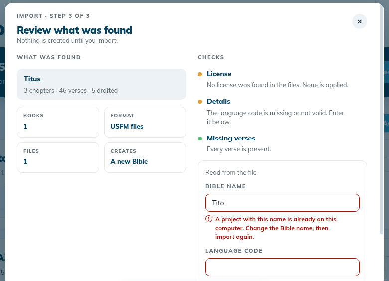
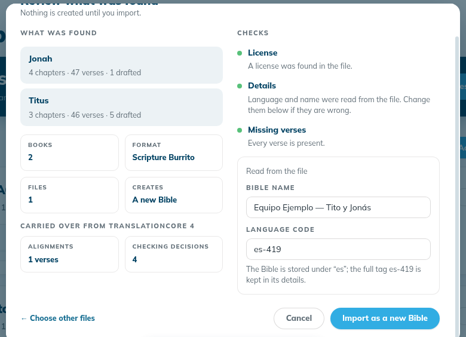
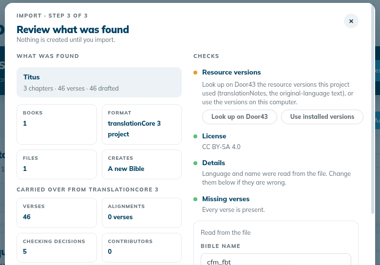
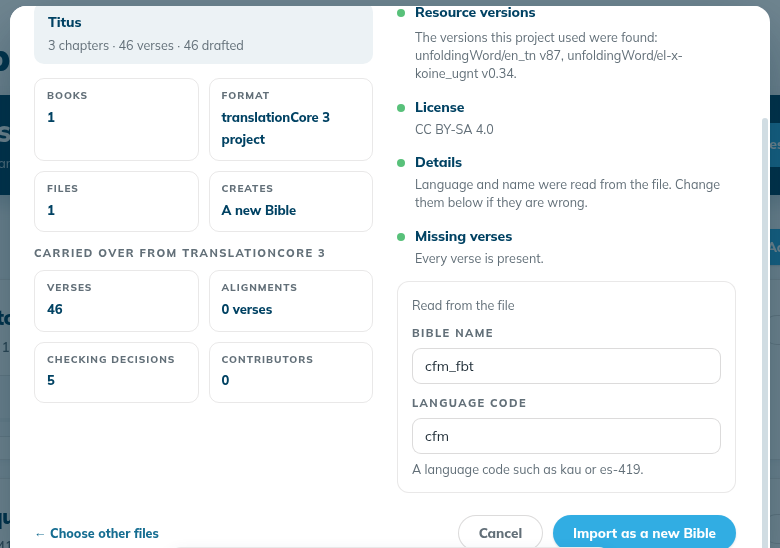

Import a project (translationCore 3, USFM or Scripture Burrito)
Bring existing work into tC4 as a new project — from translationCore 3 project zips, USFM files, or a Scripture Burrito zip. Nothing is created until you confirm.
Where in the app: Home › + Add a project › Import a project
What it is
The import screen turns files from other tools into a new project on this computer. It accepts three kinds of file:
| Kind | Files | What comes across |
|---|---|---|
| translationCore 3 project (tC3) | .zip exported from translationCore 3, one or many (one language at a time) | The text, and the alignments and checking decisions tC3 recorded |
| USFM files | .usfm, .sfm or .txt, one or many, one file per book | The text only |
| Scripture Burrito | one .zip containing metadata.json and ingredients/ | The text. A burrito exported by tC4 also brings its alignments and checking decisions. Bible and Open Bible Stories burritos both work. |
"Each import creates a new Bible. Nothing on this computer is changed until you confirm."
When to use it
- To move a translation from translationCore 3 (tC3) into tC4.
- To start from a USFM draft made in another program.
- To restore or move a project exported from tC4 as a Scripture Burrito (see Export a project as a Scripture Burrito).
Step by step
- On Home, click + Add a project.
- In the Add a project dialog, click the third card, Import a project. The import opens at "Import · step 1 of 3".
- Choose the kind of file: translationCore 3 project, USFM files or Scripture Burrito.
- Drop your files on the drop area, or click it to choose them in the "Open Files" window. The file appears under "1 file". Remove a wrong file with its ✕ button.
- Click Review files →.
- Read Review what was found (step 3 of 3). On the left, What was found lists each book with its chapters, verses and drafted verses, and the counts of books and files. On the right, Checks shows three rows: License, Details and Missing verses. A green dot means all is well; an orange dot means you need to look.
- Check the Bible name and Language code under Read from the file. Change them if they are wrong.
- If Details is orange and says "The language code is missing or not valid. Enter it below.", the Language code box is outlined in red with "Enter a language code such as kau or es-419." Type the code (for example
es). Details turns green and Import as a new Bible becomes active. - If the Bible name is already used on this computer, the box is outlined in red with "A project with this name is already on this computer. Change the Bible name, then import again." Type another name; the message goes away.
- If Details is orange and says "The language code is missing or not valid. Enter it below.", the Language code box is outlined in red with "Enter a language code such as kau or es-419." Type the code (for example
- A tC4 Scripture Burrito shows Carried over from translationCore 4 with the number of aligned verses and checking decisions it brings. A translationCore 3 project shows Carried over from translationCore 3.
- For a translationCore 3 import, the Resource versions check is orange: "Look up on Door43 the resource versions this project used (translationNotes, the original-language text), or use the versions on this computer." Choose Look up on Door43 (this needs the internet; click Continue if "Use the internet?" appears) or Use installed versions. Import as a new Bible stays off until you choose. After the look-up the check turns green and names what it found, for example "The versions this project used were found: unfoldingWord/en_tn v87, unfoldingWord/el-x-koine_ugnt v0.34."
- Click Import as a new Bible. tC4 shows Creating your Bible… (for a small book this may flash by too fast to see).
- Home opens with the message "{name} was imported · {books}", for example "Tito was imported · Titus". The new card is at the top of the list and carries the Imported badge.
- Click a book tile on the new card. A book with no remembered place opens in Understand at chapter 1.
What you should see
- The dialog title is Import a project and moves through "Import · step 1 of 3", "step 2 of 3" and "step 3 of 3". Step 1 has ← Back at the bottom.
- The review lists each book with its chapters, verses and drafted verses, and three checks: License, Details and Missing verses.
- A USFM file never carries a language code: Details is orange ("The language code is missing or not valid. Enter it below.") and Import as a new Bible stays disabled until you type a code. Then Details turns green.
- If the Bible name is already on this computer: "A project with this name is already on this computer. Change the Bible name, then import again." Import stays disabled until you change the name.
- A tC4 Scripture Burrito shows Carried over from translationCore 4 with its alignments and checking decisions.
- A translationCore 3 project shows Carried over from translationCore 3 and an orange Resource versions check with Look up on Door43 and Use installed versions. Import as a new Bible stays off until you choose one. After the Door43 look-up it reads "The versions this project used were found: …".
- A damaged file shows "This file cannot be imported" with the reason and a code such as import.damaged.usfm-parse or import.damaged.truncated. Nothing is created.
- After Import as a new Bible Home shows "{name} was imported · {books}", the new card carries an Imported badge, and its book opens in Understand.
Screenshots

img/bp-import-1.png
img/bp-import-2.png
img/bp-import-3.png
img/bp-import-4.png
img/bp-import-5.png
img/bp-import-6.png
img/bp-import-7.png
img/bp-import-8.png
img/bp-import-9.pngTips
- Use ← Choose another kind or ← Choose other files to go back a step. On step 1, ← Back takes you back to the three cards of Add a project.
- Keyboard: in the Add a project dialog, press Tab until the Import a project card has a blue ring, then press Enter or Space. Esc closes the dialog.
- If you close the import part way (Esc, the ✕ button, or a click outside the dialog), nothing is created, and + Add a project opens on the three cards the next time.
- USFM never carries a language. A USFM file has no language code, so tC4 always leaves the Language code empty for USFM. Type it yourself. The Bible name comes from the file's
\hline (for example "Tito"). - USFM: each file must start with an
\idline so tC4 knows the book. Two files for the same book are refused. - A regional code such as
es-419is kept. The review explains: "The Bible is stored under "es"; the full tag es-419 is kept in its details." The new card showses-419. - A Scripture Burrito can hold several books. "Equipo Ejemplo — Tito y Jonás" showed BOOKS 2 (Jonah and Titus) and the new card had both tiles.
- An imported USFM project has no source texts pinned yet. Its Understand screen says "This project pins no source texts, so there is no source passage to show." Add sources from Project settings › Manage source texts →.
- translationCore 3: all the zips must be in the same language. The review counts what comes across from translationCore 3: verses, alignments, checking decisions and contributors.
- translationCore 3: the versions Look up on Door43 finds may not be on this computer (in this test, en_tn v87). The new project's helps panel then says "The pinned resource is not on this computer yet. Get it from Source texts." Download them from Project settings › Manage source texts →.
- Importing the same translationCore 3 zip a second time gives the same Bible name, so the name-in-use message appears. Type another name, for example
cfm_fbt 2. - Damaged files are refused. If a file cannot be read, the review shows a red "This file cannot be imported" box with the reason and a code (for example
import.damaged.usfm-parse), and Import as a new Bible stays greyed. Nothing is created. See Messages that protect your project. - Known issue: The message "{name} was imported · {books}" does not go away by itself, even in later imports. It can cover the bottom of the import dialog (the ← Choose other files and Cancel row) and the cards on Home. Close it with its ✕.
- Known issue: Only the newest import keeps the Imported badge. Import another project and the badge moves to the new card.
- Known issue: After you type the language code yourself, Details still says "Language and name were read from the file", although you typed the code.
- Known issue: For a damaged file, the Checks column can still show green Details and "Every verse is present." under the red box. The red box is the one that counts: nothing can be imported.
- Known issue: The carried-over count says "1 verses" for one verse.
- Opening a translationCore 3 project's book straight after the import used to turn the window white in an older build. In build 79d3017 it opened every time (three imports in a row). If a screen still cannot be drawn, tC4 shows "This screen could not be shown." with Back to Home, and Window › Reload (Ctrl+R) brings the app back without quitting. See If the app closed unexpectedly.
Known limits
- Import always makes a new project. Importing a book into an existing project is planned for 4.1.0 (issue #365).
- A project folder name is made from the Bible name using only plain letters and digits, so "Jonás" becomes
jon_sin the folder name. The card shows the full name. - When no license is found, the review says "No license was found in the files. None is applied." (issue #392).
Related topics
For testers and developers
Code: src/views/modals/AddProject.jsx, src/views/modals/Import.jsx, src/data/import/shell.ts, src/data/import/parsers.ts, src/data/import/tc3.ts, src/data/import/usfm.ts, src/data/import/burrito.ts, src/state.jsx (openImport, importReview, importRun)
Journeys: J9a, J9c, J9d
Issues: #361, #21, #195, #196, #41, #365, #436, #437, #156, #507, #435